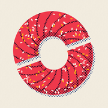

Fair Slice: Cut in Half
TürkçeEnglish · Gizlilik / Privacy
Destek · Sık sorulanlar
Nasıl oynanır?
Parmağını tatlının bir yanından öbür yanına tek hamlede kaydır: çizgi tatlıyı keser. Hedef çoğunlukla tam yarısı; bazen sipariş %30'luk dilim ya da vişnelerin de eşit bölünmesini ister. Kesim ne kadar adilse derece o kadar yüksek: KUSURSUZ, HARİKA, İYİ… Simidin deliği sayılmaz, yalnız hamur sayılır.
- Bölümler: her bölümde birkaç sipariş; kalpler biterse bölüm biter. Yıldızlar adalet, ustalık ve servis içindir.
- Zincir: büyük parça kalır, onu tekrar yarıya kes. Kaç kez yarılayabilirsin?
- Günlük: herkes için aynı günlük tatlı. Günün ilk oyunu resmidir; seriyi sürdür.
İlerlememi nasıl sıfırlarım?
Ana menü → Ayarlar → İlerlemeyi sıfırla (iki adımlı onay). Bölümler, yıldızlar, seri ve istatistikler silinir; ayarların korunur. Eğitimi baştan izlemek için Eğitimi yeniden oynat.
İlerlemem başka cihaza taşınır mı?
Hesap yok; ilerleme yalnız bu cihazda saklanır. Uygulamayı silersen ilerleme de silinir (cihaz yedeğinden geri yüklenirse geri gelir).
Reklamlar
Oyun ücretsizdir ve reklamla desteklenir. Ödüllü reklamlar isteğe bağlıdır (ör. ekstra can, ipucu, Zincir'de son şans); ödül yalnız reklam sonuna kadar izlenince verilir. Ara sıra, bir tur bittikten sonra geçiş reklamı gelebilir; oyunun ortasında ya da eğitimde gelmez.
Gizlilik
Ayrıntılar: Gizlilik politikası. AB / Birleşik Krallık'ta reklam seçimini Ayarlar → Gizlilik seçenekleri'nden değiştirebilirsin. iOS'ta izleme iznini Ayarlar → Gizlilik ve Güvenlik → İzleme'den değiştirebilirsin; izin vermesen de oyun aynen oynanır.
Bir sorun mu var?
Bize yaz: eraydurukan48@hotmail.com. Cihaz modelini, iOS / Android sürümünü ve uygulama sürümünü (Ayarlar'ın en altında) eklersen hızlı yardımcı oluruz.
Support · FAQ
How do I play?
Swipe across the pastry in one stroke: your line cuts it. The goal is usually exactly half; sometimes an order asks for a 30% slice, or for the cherries to be shared fairly too. The fairer the cut, the better the grade: PERFECT, GREAT, OK… The bagel's hole doesn't count — only the dough does.
- Levels: a few orders per level; run out of hearts and the level ends. Stars reward fairness, skill and service.
- Chain: the bigger piece stays — cut it in half again. How many times can you halve it?
- Daily: the same daily pastry for everyone. Your first game of the day is the official one; keep your streak going.
How do I reset my progress?
Main menu → Settings → Reset progress (two-step confirmation). Levels, stars, streak and stats are erased; your settings are kept. To watch the tutorial again, use Replay tutorial.
Does my progress move to another device?
There is no account; progress is stored only on this device. Deleting the app deletes your progress (unless restored from a device backup).
Ads
The game is free and ad-supported. Rewarded ads are optional (e.g. an extra heart, a hint, a last chance in Chain); the reward is given only when the ad is watched to the end. Occasionally an interstitial ad may appear after a round ends — never mid-cut or during the tutorial.
Privacy
Details: Privacy policy. In the EU / UK you can change your ad choice in Settings → Privacy options. On iOS you can change tracking permission in Settings → Privacy & Security → Tracking; the game plays exactly the same either way.
Something wrong?
Write to us: eraydurukan48@hotmail.com. Including your device model, iOS / Android version and app version (at the bottom of Settings) helps us help you faster.